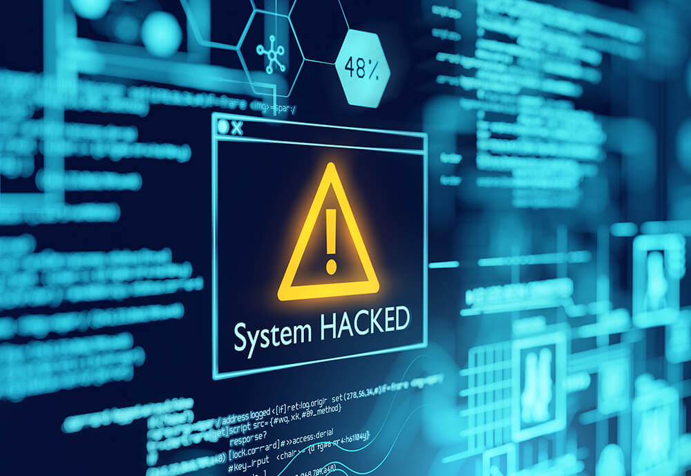

Welcome to My Random Ideas Page
This website serves as a digital notebook for my entrepreneurial and cybersecurity ideas. It's a space where creativity meets strategy, and raw concepts are refined into potential ventures.
Business Ideas
- Penetration Testing Services – Helping small businesses identify and fix their digital vulnerabilities using industry-standard tools and ethical hacking practices. Ideal for startups with limited security budgets.
- On-call Cybersecurity Emergency Response – A 24/7 service that dispatches trained cybersecurity professionals for immediate help after a data breach or suspicious activity. Think of it as a tech version of emergency services.
- Home Cybersecurity Consulting – Personal consulting for families and individuals who want to secure their smart homes, devices, and online identities. Includes router configuration, privacy settings, and best practices education.
Why Cybersecurity?
Technology is everywhere, and so are digital threats. I believe that understanding cybersecurity isn't just for experts—it's a necessity for anyone living in the digital age. My goal is to make security knowledge more accessible and useful for everyone.
Visit the 3-Column Ideas Page or jump to Why Cybersecurity section